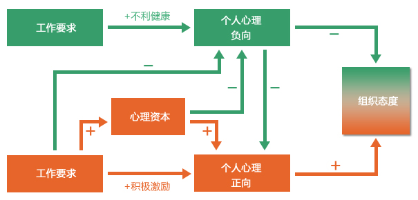
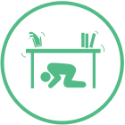
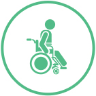
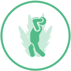
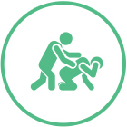
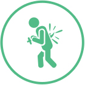
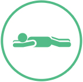

产品服务
专项调查研究
专项调查研究，服务企业特定调查需求
以企业需求为中心，依托于成熟的心理理论和优秀的研发团队，结合丰富的实践经验，量身定制企业专属的心理调查研究。-
顶级资深专家团队支持：
长期与海内外专家交流合作，对公司内部研发创新提供先进支持。 -
强大研究数据系统支持：
依托全国最大的百万级职业心理健康数据库，构筑本土化的员工职业心理健康常模体系，涵盖众多行业和各类人群。 -
优秀专业研发团队支持：
心理学、管理学等背景的专家和研发人员，坚持进行本土化研究和探索。 -
各行业丰富经验支持：
十五载研究经验，服务涉及电力、石化、通信、金融、政府、外资等众多行业。
专项调查研究服务：
- 客服专员绩效与心理状态的研究；
- 国网电力EAP与管理融合的研究；
- 营业厅员工幸福感与客户满意度关系研究；
- 高级经理人压力状况调查研究；
- 新员工入职心理健康风险筛查研究；
- 招聘中心理风险筛查研究；
- 员工身心健康结合调查研究；
组织心理健康调查
组织心理健康调查，把脉企业员工心理动态
易普斯组织心理健康调查，独创系统、完善的企业员工职业心理健康模型，对员工心理健康状况、组织态度、思想状况、幸福感、性格倾向、人格、沟通模式、职业倾向等进行调查，精准、全面地反映员工整体心理状态，给予专业、具体的可行性组织管理建议，帮助管理了解员工心理现状及思想状况，为管理决策提供依据。-
“四位一体”调查定位：
发现内在问题，探索影响因素，制定个性化方案，科学效果评估。 -
科学完善的系统模型：
以多个重要心理健康指标为核心，以“工作要求-工作资源（JD-R）模型”为关键驱动因素，创新性地与心理资本理论结合，建立中国本土化系统模型。 -
丰富的企业调查经验：
十五年的本土服务，上百家大型企业，涵盖中国各个行业 -
国内最大的常模参照：
100万级中国本土数据库，构建最具代表性的中国职业心理健康常模。 -
本土成熟的调查工具：
科学标准化的测量工具，结合客户的实际情况量身定制个性化调查问卷。 -
先进快捷的调查形式：
APP、PC端、微信全面云端体验。

大健康服务
大健康服务，不止于心
身心和谐，才是真正的健康。面对越来越多的员工不断受到“职业病”的困扰，易普斯推出大健康服务，整合了包括全科医生、营养师、行为训练师、私人教练、中医师和助产师等在内的众多专业资源，为员工提供线上线下相结合的一站式健康管理服务。- 了解健康风险
-
- 参与健康活动
-
- 形成健康习惯
-
- 享受健康服务
-
健康促进服务：
健康知识宣传、健康咨询热线、健康培训讲座、健康活动策划。 -
定向健康管理：
戒烟戒酒项目、减重减脂项目、孕产辅导项目。 -
健康体验角：
健康风险评估、推拿按摩理疗、膳食营养搭配、健康仪器检测。
管理者积极领导力
管理者积极领导力提升，智慧管理新方向
积极领导力，聚焦管理者和员工的积极心理品质，引导人的全面发展和潜力发挥，促进企业卓越绩效，助力企业稳定发展。体系化前期测评、前沿理论模型、个性化提升课程、一对一咨询式辅导、科学化测评报告，扫除不同层级管理者的挑战，全方位激发企业管理者的积极领导潜能和特质。-
在线测评
-
个人领导积极力报告
-
组织整体积极领导力分析
-
定制化提升课程
-
教练式管理辅助
全员心理资本提升培训
EAP培训课程，开启成长“心”动力
听君一席话，胜读十年书。名师讲堂，传递知识的力量，倾注易普斯15年心血，汇聚国内外行业名家，完善培训课程体系，为上百家企业提供3000余场培训，覆盖人群超过8万人。深度把握员工内心需求，挖掘员工积极潜能；全面解读企业关键问题，激活组织正能量，让企业更幸福，让生命更灿烂！- 全体员工 升级
- 管理者 提升
- 新员工 融合
- 女性员工 关爱
- 一线班组 建设
- 企业危机 干预
危机干预
危机干预服务，特殊时期的特别关爱
我们渴望幸福、平静的生活，然而，变故时有发生，处理不当，会对员工产生严重的心理创伤。易普斯为客户提供最专业、最快速、最优质的危机干预服务，将危机事件的危害降至最低。易普斯多年来处理过300余起危机事件，并多次成功将危机事件扼杀在萌芽阶段。心理危机源：
-  突发自然灾害
-  重大工伤事故
-  精神疾患发作
-  职场暴力
-  自杀
-  猝死
- 机构调整
- 裁员降薪
新员工发展计划
新员工发展计划，“过渡期”的心理支持
很多新员工在职业化的过程中，可能会遭遇“理想很丰满，现实很骨感”的境况，唯有及时调整心态，才能化挑战为机遇，顺利成长。易普斯新员工发展计划，通过建立职业心理档案，提供入职适应训练和职业生涯规划，开展新人指导师计划等系列专项服务，帮助新员工迅速适应工作环境，融入企业文化，进一步实现公司人才发展战略。- 职业心理障碍
- 入职访谈
- 职业肖像
- 入职适应训练
- 适应方案规划
- 适应训练执行
- 适应训练评估
- 职业生涯规划
- 职业发展顾问
- 职业生涯设计
- 职业发展追踪
- 新人指导师计划
- 指导师顾问
- 指导师计划
组织变革服务
组织变革服务：积极心理学护航组织变革关键期
新常态下的中国创新求发展，变革期中的企业更要聚力谋未来。以积极心理学融入组织血液，助力结构调整期组织平稳过渡、辅助组织架构兼并时团队融合、护航组织人事裁员时员工心理，避免组织动荡时猝发危机事件。-
变革顾问：
洞察变革抗阻因素，提供变革沟通方案，实施高危心理员工评估。 -
裁员服务：
搭建员工心理支持和干预系统，疏导员工消极情绪，加强员工心理调适，预防和应对由此引发的危机事件。 -
团队融合：
辅助团队建立信任机制，培养员工积极适应环境变化能力，营造团队积极氛围，激发团队协作意识。